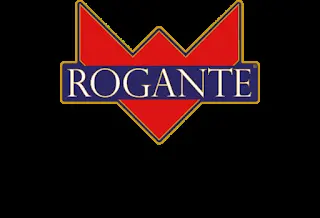
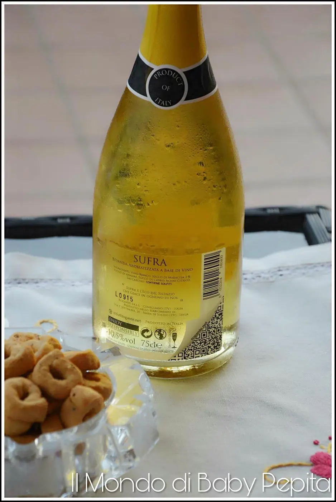
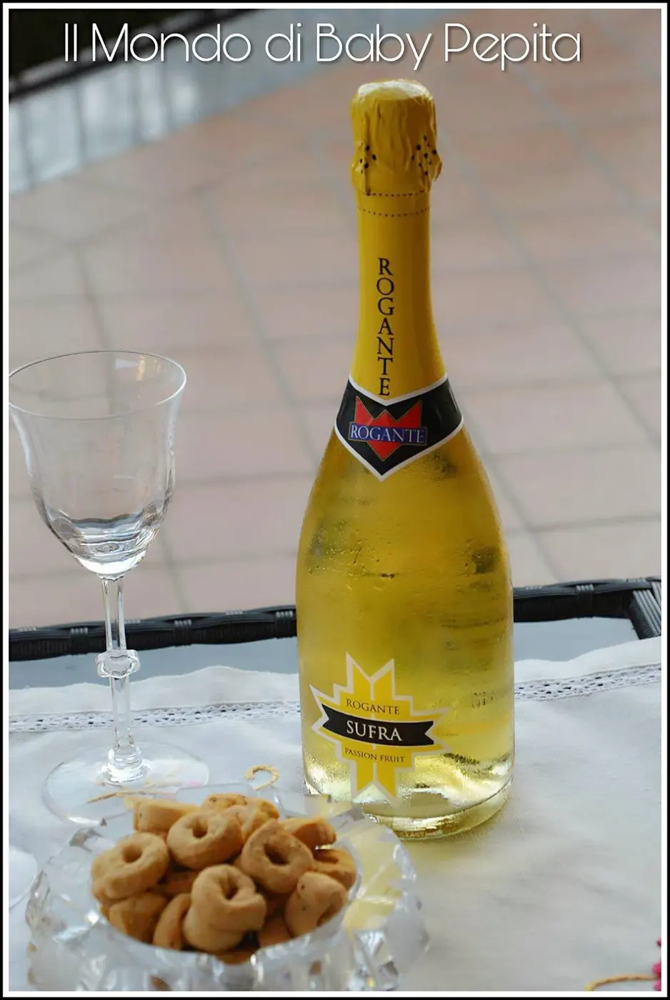
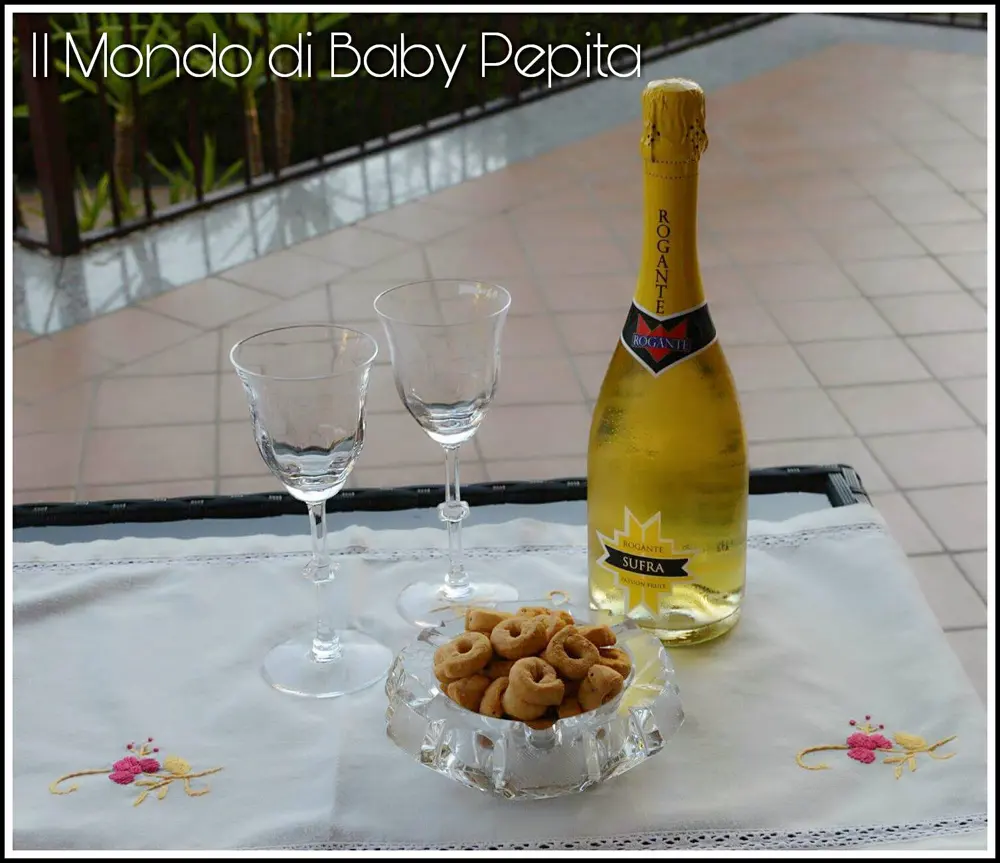

ROGANTE - spumante frizzante

Il vino e lo spumante si sa, è nelle parole dei più grandi scrittori e poeti che, dalle origini ad oggi, hanno voluto e saputo descrivere questo affascinante nettare in aforismi e citazioni.

Ormai esistono di ogni tipo e gusto. Qui oggi abbiamo il piacere di ospitare, nel mio blog, un marchio conosciuto per la sua linea di spumanti fruttati, stiamo parlando di Rogante.
Oggi, oltre ai gusti base, abbiamo imparato ad apprezzare queste bevande in diverse varianti.
Rogante nasce dalla convinzione di una nuova idea di trasformare lo spumante come noi tutti lo conosciamo in un prodotto insolitamente accattivante.
Ed è così che abbinando le uve migliori a concentrati di fritta 100% naturali hanno dato vita a vere e proprie prelibatezze.
Esistono infatti spumanti Rogante di diversi frutti ovvero :
• Green fruit; che contiene un retrogusto di kiwi.
• Melograno; che già dal nome si capisce che contiene i piccoli frutti rossi del melograno.
• Cherry; un gustoso spumante al sapore di ciliegia.
• ExoticPassion; fatto con l'ananas, il gusto di albicocca e della pesca per uno spumante fresco ed esotico.
Quello che ho avuto il piacere di provare e devo dire apprezzare davvero, è stato il Rogante ExoticPassion.

Come spiegavo prima, è stato ideato con i profumi esotici delle terre lontane.
I frutti freschi come l'ananas, l'albicocca e la pesca regalano un inconfondibile colore dotato e un gusto versatile e decisamente rinfrescante.
Ha un colore dorato e molto fine, adatto anche a cene ma soprattutto ad aperitivi eleganti.
Ha uno straordinario profumo esotico di frutta fresca molto invitante.
Avvolgente nel gusto e nella freschezza, morbido e deciso.
Io lo consiglio appunto per aperitivi abbinato a piatti freddi, semifreddi o coppe di gelato e frutta.

Adatto quindi soprattutto per un'estate sprizzante a ritmo di bollicine.
Prezzo: 15,00€
Peso: 1.55 kg 1
bottiglia: 0,75 l.
È acquistabile sul sito direttamente consegna in una settimana dall'ordine.